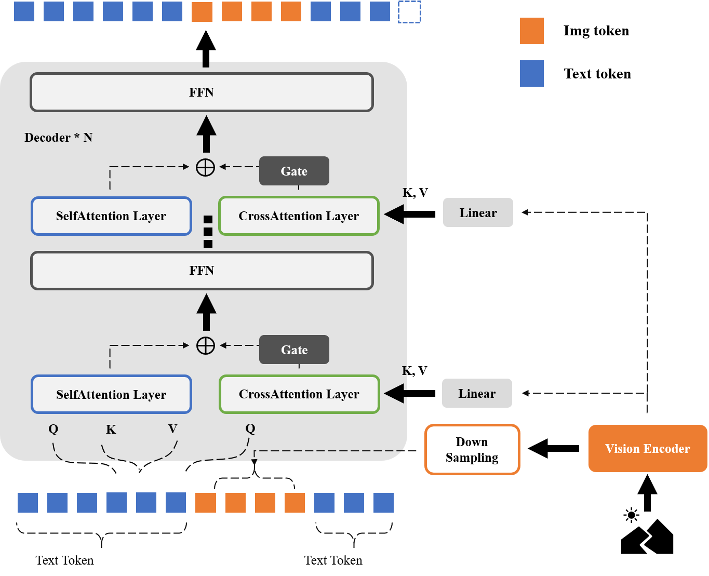
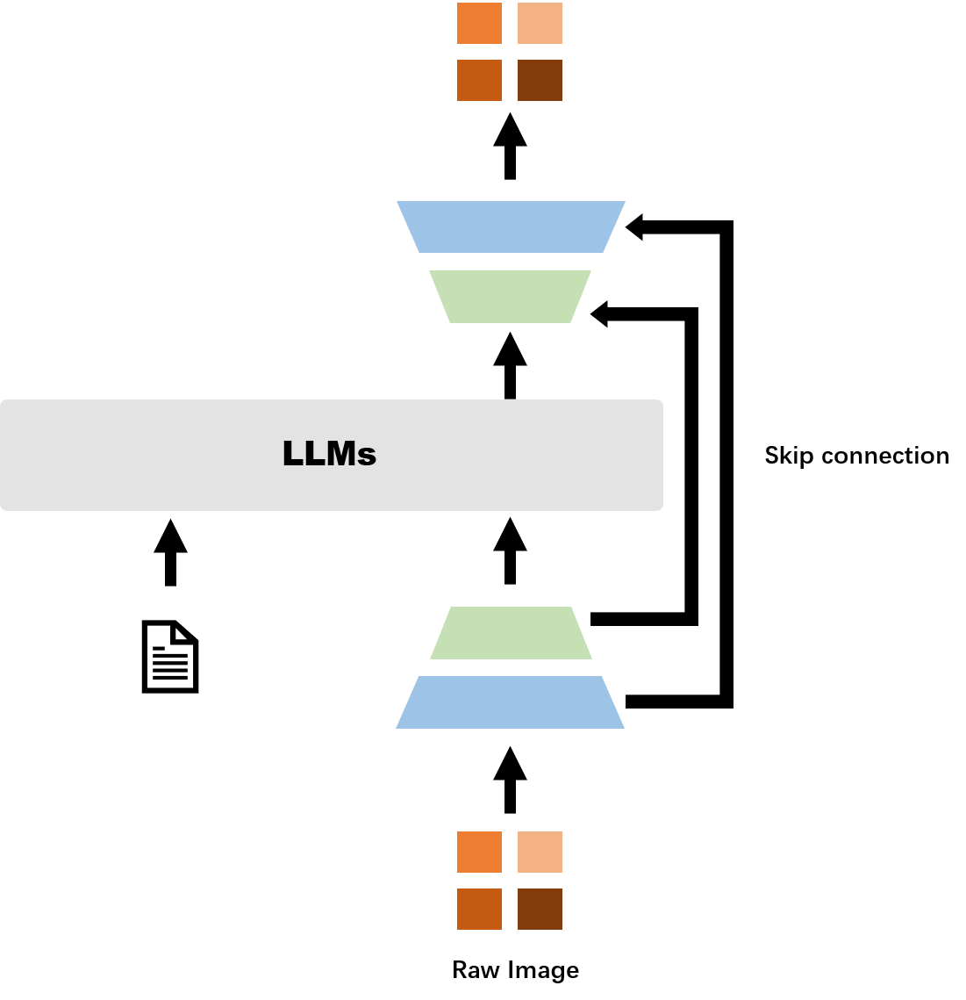
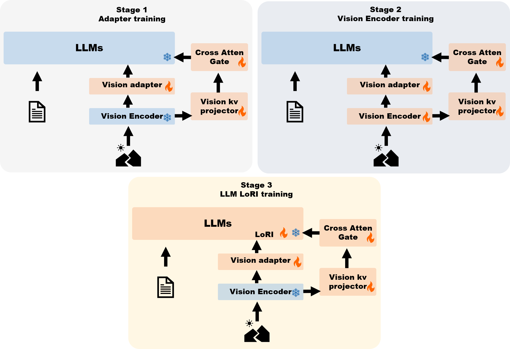
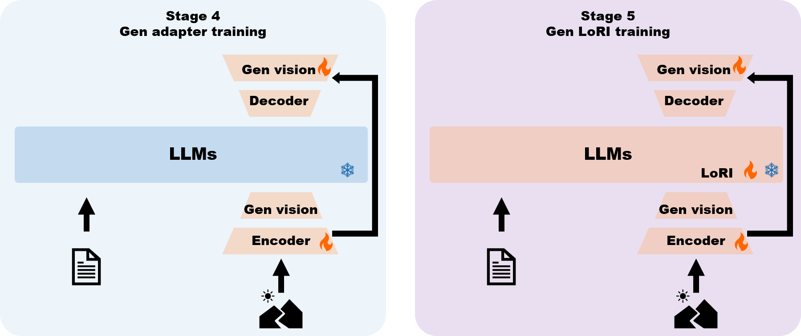
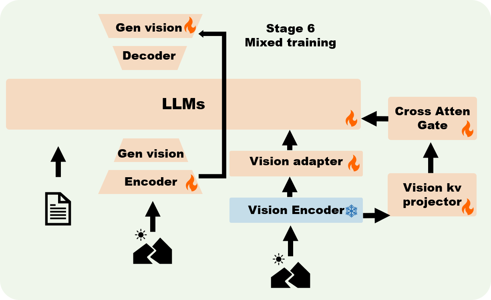

Section 02
Methodology
Model Architecture
Multimodel Understanding
Current multimodal large models typically employ pre-trained LLMs as their backbone network, where visual modality information is first tokenized through a visual encoder before being fused with text tokens. During training, these two modalities are aligned to achieve multimodal understanding capabilities. There are two predominant approaches for fusing visual and textual information: Direct concatenation, Visual tokens and text tokens are simply concatenated and injected into the LLM for autoregressive generation; Cross-attention injection, Text information is injected into different layers of the language model backbone via cross-attention mechanisms.

Architecture of the Multimodal Understanding model
Previous research[@laurenconWhatMattersWhen2024] found that direct concatenation generally outperforms cross-attention injection when training language backbone models. However, while the multi-head self-attention mechanism computes attention scores with O(n²) complexity, direct concatenation increases sequence length, leading to a significant surge in computational load. To reduce computational costs, some lightweight multimodal models still opt for cross-attention architectures. To combine the advantages of both approaches, this study proposes a multi-scale multimodal fusion method.
This study processes images through a visual encoder followed by further compression via downsampling. Similar to OmniVLM[@chenOmniVLMTokenCompressedSubBillionParameter2024], we employ a 1D convolutional layer (kernel size 𝑘 = 9, stride 𝑠 = 9, no padding) to minimize the number of tokens concatenated into the context. Additionally, intermediate layers from the visual encoder with higher fine-grained features are incorporated through cross-attention operations at each decoder layer. The output from the final cross-attention layer is gated and weighted before being summed with the attention layer output, with the combined result subsequently fed into the FFN layer:
2D Rotary Position Embedding: Early multimodal large models often lacked specialized positional encoding for visual data, simply flattening tokens from all modalities and applying standard 1D positional encoding. Subsequent research[@SuJianLinBiMenZaoCheZhiDuoMoTaiSiLuQianTanSanWeiZhiBianMa2024], [@baiQwen25VLTechnicalReport2025] extended RoPE-1D to two or even three dimensions - intuitively allocating half the positional features to the first dimension and the remaining half to the second dimension. This approach offers dual advantages: it more effectively models positional relationships between adjacent image patches while maintaining compatibility with the backbone network's pretrained positional encoding capabilities. Notably, RoPE-2D automatically reduces to RoPE-1D when the context contains only text tokens. Our study adopts this positional encoding scheme as well. Since the visual tokens in the self-attention layer are derived from downsampled visual encoder outputs, we replicate each token in the cross-attention layer by the downsampling factor to maintain positional index correspondence and achieve spatial alignment.
Causal mask: We enable information interaction between different patches from the same image to achieve local bidirectional attention effects. To maintain compatibility with autoregressive tasks, text tokens still preserve unidirectional attention through causal masking.
Visual Generation
Discrete or continuous？ In mainstream perspectives, autoregressive models are typically associated with discrete representations. Since the essence of LLMs is to predict the next token, most vision generation models integrated with LLMs employ discrete processing approaches—predicting visual tokens from a codebook followed by decoding through a pretrained VQVAE. However, visual data is inherently continuous, and the forced conversion to discrete representations followed by decoding inevitably incurs information loss[@SuJianLinBiMenZaoCheZhiDuoMoTaiSiLuQianTanYiWuSunShuRu2024]. On the other hand, modern decoder-only LLMs process continuous features via token embeddings, and their outputs before the lm head detokenization are also continuous. This suggests that visual information can inherently be handled by LLM decoders in a continuous input-output manner without requiring explicit discretization.

Architecture of the Diffusion model
In this work, for the visual generation component, we adopt a structure similar to Transfusion[@zhouTransfusionPredictNext2024], utilizing the LLM backbone for both token prediction and visual diffusion. The diffusion objective is applied to predict image patches, where noise is added to each input image \(x_0\) following the diffusion process, and the model predicts either the noise or the vector field. During inference, at each time step, the noise or vector field is computed, and \(x_{t-1}\) is derived via SDE or ODE solvers, iteratively replacing \(x_t\)until \(x_0\) is generated. In this work, our method avoids discretizing visual features and eliminates the need for an additional pretrained VAE for encoding/decoding. 【Instead, we operate directly on raw image patches, with the diffusion process restoring the original patches. 】Pretrained VAEs are often limited by their training datasets and architectures, particularly in generating high-frequency details like text, where their performance tends to be suboptimal. While LDMs (Latent Diffusion Models) offer computational efficiency advantages during both training and inference, end-to-end training from scratch enhances the model’s capability in handling such data.
Training Procedure
Our framework employs distinct optimization objectives for visual understanding and generation tasks: an autoregressive objective , for visual understanding and a diffusion-based objective: for visual generation.
Owing to the decoupled design of the visual processing paths within our framework, we implement a phased training strategy. This allows the two tasks to be trained independently in the initial phase to achieve preliminary cross-modal data alignment, after which they are jointly trained. Given the substantial divergence in their optimization objectives, this segregated training approach significantly reduces the optimization difficulty compared to an end-to-end joint training regimen from the outset. Consequently, we structure the training procedure into three primary phases: 1) the Visual Understanding Training Phase, 2) the Visual Generation Training Phase, and 3) the Joint Training Phase. Each primary phase is further subdivided into specific stages to facilitate the refined optimization of different model components.
Multimodel Understanding Training
For the visual understanding training, we implement a progressive pipeline comprising three distinct stages:

Multimodel Understanding Training Stage
Stage 1: This stage focuses on achieving preliminary modality alignment. We freeze the weights of the backbone networks and train only the newly introduced adapter layers, which include the components connecting the visual encoder and the Large Language Model backbone: the Adapter, the Cross-Attention Gate, and the key-value projectors within the cross-attention layers. Training is conducted using the LLaVA-Pretrain[] dataset.
Stage 2: This stage aims to adapt the visual encoder's feature extraction capabilities to better align with the language model's representations. Here, we train the visual encoder and all additional modules while keeping the parameters of the LLM backbone frozen. Although visual encoders are typically frozen in most research to preserve generalization and training stability, some studies suggest that careful fine-tuning can enhance model performance. For this stage, we randomly sample a subset of data from the COYO[] dataset and generate a synthetic dataset with a 1:1 ratio for training.
Stage 3: This final stage is designed to train the model's instruction-following capabilities and prepare for integration with the subsequent generative module. We train all modules except the visual encoder. Crucially, to facilitate future merging, we employ LoRI[] for the LLM backbone—freezing its original weights and optimizing only the newly introduced low-rank matrices—while performing standard fine-tuning on the other modules. This stage utilizes the LLaVA-Instruct[] dataset for training.
Visual Generation Training
The training for the visual generation component is conducted over two stages:

Visual Generation Training Stage
Stage 4: In this stage, we freeze the weights of the backbone network and train only the newly initialized components—namely, the visual generation encoder and decoder, which follow a U-Net-like architecture. The objective of this phase is to achieve preliminary feature alignment between the visual generation modules and the language model. The model is trained on the ImageNet-1K dataset, with the output image resolution set to 128×128 pixels.
Stage 5: This stage focuses on further enhancing the model's generative capability and its ability to follow instructions for image generation. Consequently, in addition to the visual generation encoder and decoder, we apply Low-Rank Adaptation to fine-tune the LLM backbone. Training is performed on a subset of N data points randomly sampled from dataset (a).
Mixed Training

Mix Training Stage
Following the completion of the aforementioned five-stage training, the model has acquired foundational capabilities in both visual understanding and generation. Subsequently, joint training is conducted to integrate these two tasks. First, the incremental parameters learned via LoRA in Stage 3 and Stage 5 are concatenated and merged into the LLM backbone. In this final joint training stage, the consolidated model undergoes comprehensive fine-tuning, optimizing all parameters except those of the visual encoder. For data composition, the visual understanding component utilizes randomly sampled subsets from the datasets employed in Stage 2 and Stage 3. The visual generation component leverages a portion of the dataset from Stage 5, supplemented with an additional dataset (b). This strategy aims to enhance the model's image-to-image generation capability and its capacity for synergistic multimodal understanding.

.png)